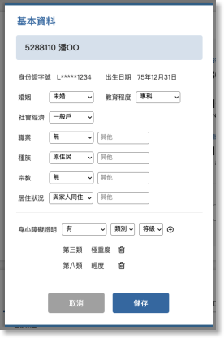

03-1-1-1 編輯基本資料

項目
內容
說明
病人個資區塊
病歷號
資料來源：HIS
姓名
資料來源：HIS

床位號
資料來源：HIS
若非住院中的病患，不顯示床位號。

病人資訊
英文字母＋後四碼
1. 資料來源：HIS 病人基本資料
2. 中間數字需隱碼
出生年月日
民國年月日
資料來源：HIS 病人基本資料

婚姻
下拉選項
1. 預設顯示HIS裡的註記，若也曾在吞嚥系統更新過，則顯示最新的資訊。
2. 選項
- 已婚
- 未婚
- 離婚
- 鰥寡
職業
下拉選項
1. 預設顯示HIS裡的註記，若也曾在吞嚥系統更新過，則顯示最新的資訊。
2. 選項
- 無
- 退休
- 家管
- 軍
- 公
- 教
- 農
- 漁
- 林禽畜養殖人員
- 工
- 商
- 自由業
- 服務業
- 醫療相關人員
- 學生
- 其他，若選擇其他必填後方文字輸入框
種族
下拉選項
選項
- 閩南人
- 客家人
- 原住民
- 榮民
- 外省人
- 新住民
- 其他，若選擇其他必填後方文字輸入框
教育程度
下拉選項
1. 預設顯示HIS裡的註記，若也曾在吞嚥系統更新過，則顯示最新的資訊。
2. 選項
- 不詳
- 大學以上
- 大學
- 專科
- 高中職
- 國中
- 小學
- 不識字自學
宗教
下拉選項
1. 預設顯示HIS裡的註記，若也曾在吞嚥系統更新過，則顯示最新的資訊。
2. 選項
- 無
- 佛教
- 道教
- 基督教
- 天主教
- 伊斯蘭教
- 其他，若選擇其他必填後方文字輸入框
社會經濟
下拉選項
1. 預設顯示規則：第一次取自HIS，若部分負擔或就醫優惠中標示”低收入戶”或”中低收入戶”，依標示顯示，若都沒有則顯示為一般戶；，若也曾在吞嚥系統更新過，則顯示最新的資訊。
2. 選項
- 一般戶
- 低收入戶
- 中低收入戶
居住狀況
下拉選項
1. 預設顯示HIS醫囑初始評估或入院評估，若也曾在吞嚥系統更新過，則顯示最新的資訊。
2. 選項
- 與家人同住
- 獨居
- 照護機稱
- 遊民
- 其他
身心障礙證明／等級
有連動關係的下拉選項
1. 預設顯示規則：第一次取自HIS，若部分負擔或就醫優惠中標示”持殘障手冊”顯示為有，反之則顯示無。
2. 若吞嚥系統基本資料有變更則以吞嚥系統資料為最新，也可以吞嚥系統新增/修改類別及等級。
3. 選項1
- 有／無
4. 選項1為有時，選項2類別
- 第一類
- 第二類
- 第三類
- 第四類
- 第五類
- 第六類
- 第七類
- 第八類
5. 選項1為有時，選項2類別任一，選項3等級
- 輕度
- 中度
- 重度
- 極重度
